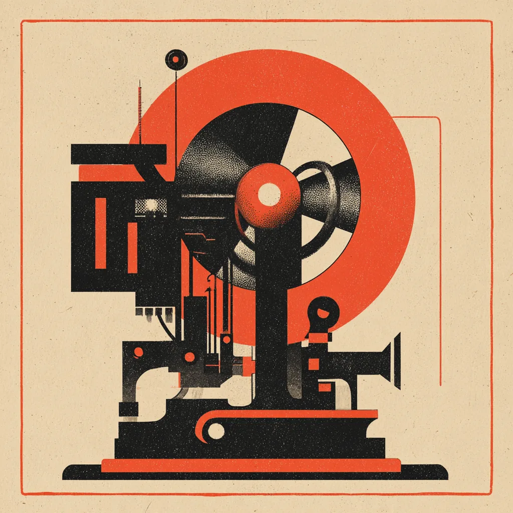

Chi siamo

Un'idea di Carlo, generata da Claude, basata sulla newsletter di PierG.
L'idea
Ogni giorno escono più notizie sull'intelligenza artificiale di quante se ne riescano a leggere. Piergiorgio Grossi (PierG) le raccoglie e le riassume in italiano nella sua newsletter Daily Brief. Questi due giornali la rimettono in pagina, perché si possa leggere come un quotidiano e, la domenica, come un settimanale.
Il Quotidiano
Ogni mattina Claude legge il Daily Brief del giorno e lo impagina come un manifesto: una notizia in apertura, il numero del giorno, il resto in un indice, e ai margini le rubriche In breve, Segnali deboli e Dai social. Ogni giorno della settimana ha il suo colore. I testi sono quelli della newsletter e ogni notizia rimanda alle sue fonti originali.
Il Settimanale
La domenica Claude rilegge le newsletter della settimana, sceglie i temi che sono tornati più spesso e li racconta in una copertina e in tre approfondimenti, con la settimana in breve, i numeri e cosa tenere d'occhio. Il commento è un'analisi di Claude e lo dichiara, e sotto ha sempre un'altra lettura che ne mette alla prova la tesi.
Le immagini
Le foto delle notizie vengono da Wikimedia Commons, con licenze libere, e sono stampate in bicromia: sono immagini di repertorio scelte sul tema, non foto dell'evento. Autore e licenza sono indicati sotto ogni foto. L'emblema della testata, le icone e questa illustrazione sono stati generati con Midjourney.
Per seguirli
Ci sono i feed RSS del Quotidiano e del Settimanale. Per ricevere il Daily Brief nella posta, chiedi a PierG. Il sito ricorda solo nel tuo browser l'ultima edizione che hai visto e le notizie che hai aperto, e non lo invia a nessuno.